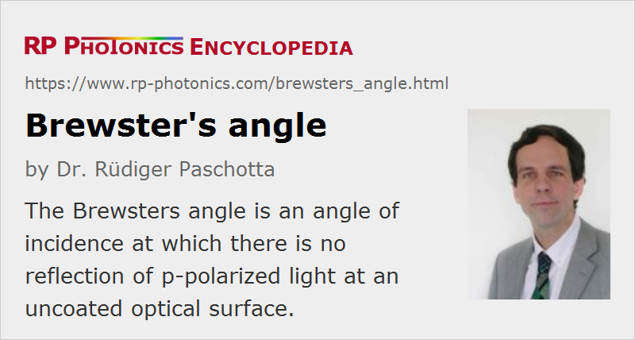

Brewster's Angle
Definition: an angle of incidence at which there is no reflection of p-polarized light at an uncoated optical surface
German: Brewster-Winkel
Formula symbol: θB
How to cite the article; suggest additional literature
Author: Dr. Rüdiger Paschotta
When light impinges on a flat boundary between two different transparent media, generally at least some part of its optical power is reflected. However, for a particular angle of incidence, which is called Brewster's angle (after Sir David Brewster) or sometimes polarizing angle, that reflection does not occur provided that the light is p-polarized. The latter condition means that the polarization direction (i.e., the direction in which the electric field vector oscillates) lies within the plane of incidence. For s-polarized light, the reflectivity is even higher than for light with normal incidence on the boundary.
The magnitude of Brewster's angle depends on the refractive indices of the involved optical media and can be calculated with Brewster's law:
Here, n1 and n2 are the refractive indices of the medium of the incoming beam and the other medium, respectively. One can show that the sum of the angles in both media (relative to the direction for normal incidence) is 90°.
As a numerical example, one can consider light coming from air (n1 ≈ 1) to a glass with n2 = 1.5. For that situation, one can calculate that Brewster's angle is ≈56.3°. Figure 2 shows Brewster's angle as a function of the ratio of refractive indices – or the refractive index of the second medium, if the first medium has n1 = 1.
For interfaces between media with similar refractive indices, Brewster's angle is close to 45°. Reflections are anyway weak in such cases.
For unpolarized incident light at Brewster's angle, the reflected light is fully s-polarized, as there is no reflection for p-polarized light. The term “polarizing angle” comes from that fact.

Generally, reflectivities at such surfaces can be calculated using Fresnel equations. With that, one can for example calculate the effective reflectivity for a laser beam with finite divergence as a weighted average of reflectivities for different angular components. Generally, such effective reflectivities are rather small, because most laser beams have a small divergence.
For a qualitative understanding of the vanishing reflectivity, one can consider the oscillating electric polarization in the second medium, which is perpendicular to the direction of the vanishing reflected beam. It is well known that dipoles do not emit radiation exactly in the direction of their oscillation. However, that picture is not providing a real explanation; for example, it is not clear why the direction of electric polarization in the second medium should be relevant, although the reflected beam would propagate in the first medium.
Technical Exploitation of Brewster's Angle
Optical elements in laser resonators or other optical setups are often oriented such that a laser beam propagating through them is at Brewster's angle. That way, reflection losses are avoided for p-polarized light without requiring any anti-reflection coatings. The advantage is not only that such coatings are not required, but also that the realistically achieved effective reflectivities are typically lower with that technique. However, various disadvantages can result from that approach – for example, astigmatism of focused beams, which may require additional components or design details in order to avoid detrimental effects.
Examples for optical elements which are often used at Brewster's angle are laser crystals, birefringent tuners, prism pairs for wavelength tuning or dispersion compensation, and Brewster windows in gas lasers. In case of prisms, this technique can of course work at the input and output face only if the angle between the two surfaces is correctly chosen. For example, for a prism made of fused silica (SiO2) and the wavelength of 1064 nm, where the refractive index is 1.486, the ideal angle between the prism surfaces would be 67.9°. When an angle of 65° is used instead, the reflection losses for a symmetric path through the crystal are ≈0.7% in total. For 60°, that loss would already rise to 3.8%. For a glass like SF10, having a higher refractive index of ≈1.7 at 1064 nm, the ideal prism angle would be at 60.8°, and when choosing the common value of 60°, the reflection losses are still quite small (0.2% total).
In principle, one can obtain a strong and adjustable attenuation of a polarized laser beam by reflecting it e.g. on a glass surface with an angle of incidence close to Brewster's angle. The problem of that technique, however, is that the reflectivity for s-polarized light is then much higher; even if the incoming beam is quite well polarized, a small s-polarized component of it could play a dominant role in the reflected beam. As explained in the article on depolarization loss, some s-polarized components can easily be generated under certain circumstances.
Disturbing optical reflections from water surfaces can be substantially attenuated with polarizing glasses, transmitting only vertically polarized light. Although the angle of incidence of sunlight may often deviate substantially from Brewster's angle, the reflectivity for p-polarized is generally much lower than for s-polarized light.
Questions and Comments from Users
Here you can submit questions and comments. As far as they get accepted by the author, they will appear above this paragraph together with the author’s answer. The author will decide on acceptance based on certain criteria. Essentially, the issue must be of sufficiently broad interest.
Please do not enter personal data here; we would otherwise delete it soon. (See also our privacy declaration.) If you wish to receive personal feedback or consultancy from the author, please contact him e.g. via e-mail.
By submitting the information, you give your consent to the potential publication of your inputs on our website according to our rules. (If you later retract your consent, we will delete those inputs.) As your inputs are first reviewed by the author, they may be published with some delay.
See also: Brewster plates, Brewster windows, optical windows, anti-reflection coatings
and other articles in the category general optics
|  |
If you like this page, please share the link with your friends and colleagues, e.g. via social media: 


These sharing buttons are implemented in a privacy-friendly way! |
2020-07-07
Why is there no Brewster's angle for s-polarization?
Answer from the author:
Only for p polarization, we can have the situation that for a suitable angle of incidence the E-field direction in the medium is perpendicular to the direction into which the reflected light would go. Under those condition, no light can go there. For s polarization, that could not happen.